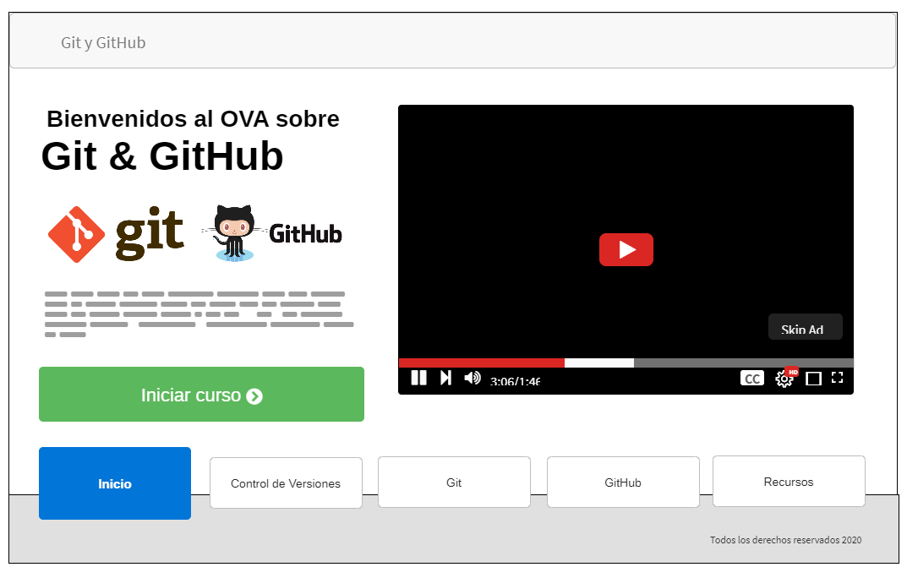

Volver al inicio
Planeación
Objetivo del sitio
Objetivo General
Identificar el funcionamiento Git y su integración con GitHub para implementar un sistema de control de versiones en un proyecto web.
Objetivos Específicos
- Describir un sistema de control de versiones.
- Reconocer los contenidos básicos de Git, sus escenarios y la creación de ramas en un proyecto web.
- Detallar la creación de una cuenta de GitHub.
- Indicar cómo conectar Git y GitHub para sincronizar el proyecto web.
- Indicar cómo se realiza un pull y un push de cambios a GitHub.
Materiales
Contenido
Sistemas de Control de Versiones
Definición de qué es un sistema de control de versiones y los diferentes sistemas que podemos encontrar en el mercado.
Git
Un poco de historia sobre git, las plataformas en las que funciona y como instalarlo.
- Comandos: conocer los diferentes comando básicos que maneja git.
- Escritorios: identificar los escenarios local y remoto que utilizar git.
- Ramas: comprender qué es una rama, para que sirve y como se crean.
GitHub
conocer la plataforma de GitHub para sincronizar nuestros proyectos web.
- Creación de cuenta.
- Conectar proyecto web a GitHub on git remote.
- Sincronizar un proyecto web con GitHub.
Mockup de la página de inicio
